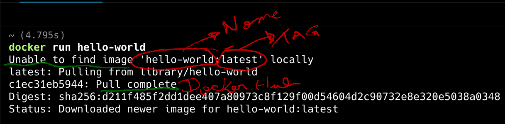

Docker

Docker é uma plataforma open source que automatiza a implantação, escalabilidade e execução de aplicações dentro de contêineres.
Contêineres são ambientes isolados e portáteis que contêm tudo o que uma aplicação precisa para funcionar, incluindo bibliotecas, dependências e configurações.
Instalação
O Docker para vários SO's, vamos trabalhar com Linux,
nas máquinas do laboratório temos o Ubuntu instalado e o Docker está nos principais repositórios.
Instalando pré-requisitos:
sudo apt-get update
sudp apt-get install qemu-system-x86 pass
sudo apt-get install curl apt-transport-https ca-certificates software-properties-common
Adiciona a chave GPG, inserindo o comando a seguir:
Agora, adicione o repositório executando este comando:
sudo add-apt-repository
"deb [arch=amd64] https://download.docker.com/linux/ubuntu $(lsb_release -cs) stable"
Depois disso, atualize a informação do repositório
Garanta que você está instalando a partir do repositório do Docker, ao invés do repositório padrão do Ubuntu ao usar este comando:
A saída correta vai ficar como o texto a seguir, com diferentes números de versões:
docker-ce:
Installed: (none)
Candidate: 16.04.1~ce~4-0~ubuntu
Version table:
16.04.1~ce~4-0~ubuntu 500
500 https://download.docker.com/linux/ubuntubionic/stableamd64packages
Após o processo anterior ter sido executado instale utilizando o repositório:
No Ubuntu server apenas o comando abaixo é suficiente:
E para verificar a instalação
Para instalar Docker Desktop, baixe o arquivo em Deb package Se você estiver em uma distro baseada no Debian.
E em seguida entre na pasta onde o arquivo foi baixado:
Atualize os repositórios e depois instale o package .deb
Primeiro Container
Execute o seguinte comando:

Docker Hub
Docker Hub é um registro de containers (container registry) hospedado pela própria Docker Inc. É o ponto de partida padrão quando você executa comandos como docker pull ou docker run.

# Buscar uma imagem do Docker Hub
docker pull nginx
# Executar diretamente a imagem
docker run -d -p 8080:80 nginx
# Verificar a imagem local
docker images
# Login (necessário para push)
docker login
# Enviar imagem para seu repositório
docker tag minha-imagem usuario/minha-imagem:v1
docker push usuario/minha-imagem:v1
| Funcionalidade | Descrição |
|---|---|
| Imagens oficiais | Repositórios mantidos por empresas ou pela própria Docker (ex: nginx, mysql) |
| Repositórios públicos | Qualquer usuário pode criar e compartilhar uma imagem abertamente. |
| Repositórios privados | Para projetos privados ou internos. Contas gratuitas têm limite. |
| Tags e versões | Cada imagem pode ter várias versões (latest, v1.0, etc.) |
| Automated Builds | Integra com GitHub/GitLab para build automático de imagens. |
| Webhooks | Aciona ações externas após o push de uma imagem. |
Dockerfile
O Dockerfile é o ponto de entrada de um container docker, é onde a imagem e toda a lógica do container são definidos. Neste arquivo definimos as etapas para criação de um container.
- FROM: define a imagem base do container.
- WORKDIR: define o diretório de trabalho dentro do container.
- COPY: copia arquivos do sistema de arquivos host para o sistema de arquivos do container.
- RUN: executa comandos no container durante o processo de build.
- EXPOSE: informa qual porta o serviço do container vai escutar
- CMD: define o comando padrão que será executado quando o contêiner for iniciado. Diferente de RUN, que é executado durante o build, CMD é executado quando o contêiner já está rodando.
Etapas do container
- Build da imagem: Ao executar
docker build -t nome-da-imagem ., o Docker lê o Dockerfile, segue as instruções e cria uma imagem. - Run da imagem: Quando você executa
docker run - 3000:3000 nome-da-imagem, o Docker cria um contêiner a partir da imagem criada, mapeia a porta 3000 do host para a porta 3000 do contêiner, e executa o comando definido em CMD.
Crie um arquivo chamado speech.sh
#!/bin/bash
TEXTO=("Arise, arise, riders of Rohan!
Fell deeds awake, fire and slaughter!
Spear shall be shaken, shield be splintered!
A sword-day, a red day, ere the sun rises!
Ride now, ride now, ride to Gondor!")
figlet -w 500 -f doh "$TEXTO"
Após isso vamos criar um Dockerfile:
FROM ubuntu:latest
RUN apt update && apt install -y figlet wget
RUN wget -P /usr/share/figlet http://www.jave.de/figlet/fonts/details/doh.flf
COPY speech.sh /speech.sh
RUN chmod +x /speech.sh
CMD ["/speech.sh"]
Vamos criar a imagem:
E usar a imagem:
API Node
Nesse exemplo vamos criar um container para uma API com javascript
FROM node:16
# Define o diretório de trabalho
WORKDIR /app
# Copia o package.json
COPY package.json ./
RUN npm install
# Copia o código da aplicação
COPY . .
# Expomos uma porta
EXPOSE 3001
# Comando para iniciar o serviço
CMD ["npm", "start"]
Construir a imagem
Executar o container
parâmetros
-d: Executa o contêiner em modo "detached" (em segundo plano).-p 3002:3001: Mapeia a porta do contêiner para a porta 3002 do seu host.nome-da-imagem: Nome da imagem
Listar Containers
Parar e Remover Containers
Ver logs
Acessar terminal
Dockerignore
Mas assim como temos arquivos que queremos ignorar no gitignore também seria necessário ignorar na imagem do container, por exemplo: - .env - node_modules/
Para isso existe o .dockerignore ele segue as mesmas regras do .gitignore.
Redes no Docker
O Docker cria automaticamente algumas redes padrão, mas você também pode criar redes personalizadas para maior controle.
| Tipo de Rede | Descrição |
|---|---|
bridge |
Padrão para containers standalone. Cada container recebe um IP interno. Comunicação entre containers na mesma rede é possível. |
host |
O container compartilha a pilha de rede do host. Sem isolamento de IP. |
none |
O container não tem acesso à rede. Útil para segurança ou teste. |
overlay |
Permite comunicação entre containers em hosts diferentes, geralmente usado com Docker Swarm. |
macvlan |
Atribui um endereço MAC diretamente ao container. Ele se comporta como um dispositivo físico na rede. |
Quando você cria um container, ele é conectado por padrão a uma rede bridge chamada bridge:
- Docker cria uma interface de rede virtual (veth) conectando o container ao host.
- O container recebe um IP interno, roteado por NAT.
- Você pode expor portas com -p ou --publish para acesso externo.
O container meu_app escuta na porta 80 internamente, enquanto o host (máquina) escuta na porta 8080 e redireciona para o container. Os containers podem se comunicar pelo nome (DNS interno do Docker resolve container1).
Docker Compose
O Docker Compose é uma ferramenta que facilita a definição e o gerenciamento de aplicações multi-container no Docker.
Ele permite que você defina todos os serviços, redes e volumes de sua aplicação em um arquivo YAML (docker-compose.yml).
Vamos utilizar nossa api e criar um docker-compose.yaml na pasta raiz da api junto ao Dockerfile.
Exemplo de um docker-compose.yaml
version: '3.8'
services:
api:
build: .
container_name: api
ports:
- "3000:3000"
environment:
- DB_HOST=postgres
- DB_PORT=5432
- DB_USER=postgres
- DB_PASSWORD=masterkey
- DB_NAME=api
depends_on:
- postgres
networks:
- api-network
postgres:
image: postgres:16
container_name: postgres-db
environment:
POSTGRES_USER: postgres
POSTGRES_PASSWORD: masterkey
POSTGRES_DB: api
ports:
- "5000:5432"
volumes:
- postgres-data:/var/lib/postgresql/data
networks:
- api-network
networks:
api-network:
driver: bridge
volumes:
postgres-data:
Outros Commandos
Segue uma lista de comandos do docker para referência.
Quais são os componentes de uma funcão
Iniciar, reiniciar e Parar o service do Docker